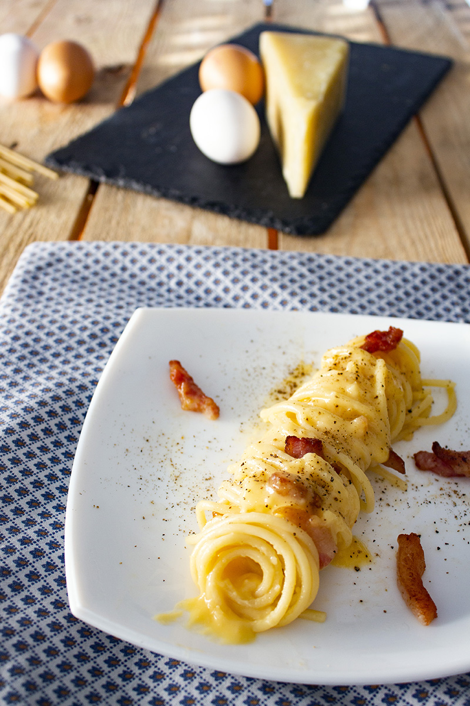

The Authentic Carbonara Romana

A typical dish from Roma, appreciated all over the world!
Based on pasta, eggs, guanciale and pecorino cheese. A simple dish, but heavenly good!
Ingredients
- Spaghetti
- Guanciale thickly cut
- 2-3 egg yolks
- Pecorino romano cheese
- About 1 tablespoon of pasta cooking water
- Black pepper and salt
Steps
- First of all, cut the bacon into squares and place in the pan.
Then place a large pot with water on the stove to boil the spaghetti. When it boils, throw a handful of rock salt, then the spaghetti.
At the same time, heat the guanciale in the pan over a gentle heat.
- The guanciale should not harden by frying too much, but should soften gently, releasing all the "fat" it will need to sauté the spaghetti.
It will take about 2 minutes. In the meantime the water will have come to the boil, cook the spaghetti.
- How to make the egg yolk cream for a perfect Carbonara:
mix the egg yolks with most of the pecorino cheese (leave 1 teaspoon for the seasoning) and pepper. Add 1 tablespoon of pasta cooking water to avoid an omelette effect.
The cream must be soft, but at the same time full-bodied and velvety. The colour should be intense and not too pale.
- Drain the spaghetti super al dente directly into the hot pan with the bacon (keeping the cooking water to one side).
Then add 2 - 3 tablespoons of the pasta cooking water. Stir everything together for 1 minute over a high heat.
Finally turn off the heat, remove the pan from the hob and pour the egg yolk cream over the spaghetti. Stir for a few seconds, add pecorino cheese, 1 - 2 tablespoons of boiling cooking water to promote creaminess and pepper!
- Buon appetito!